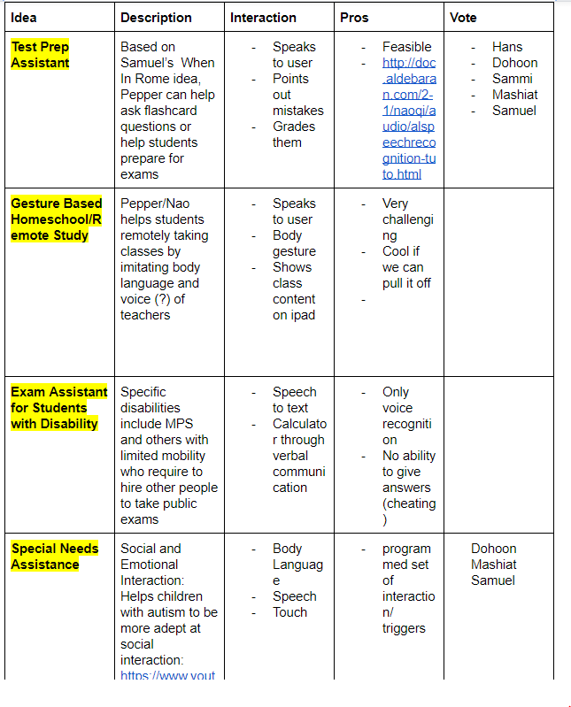
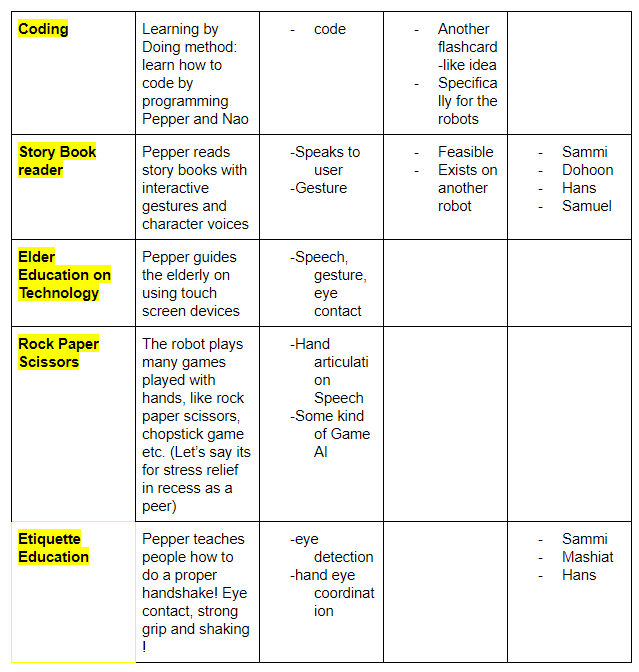
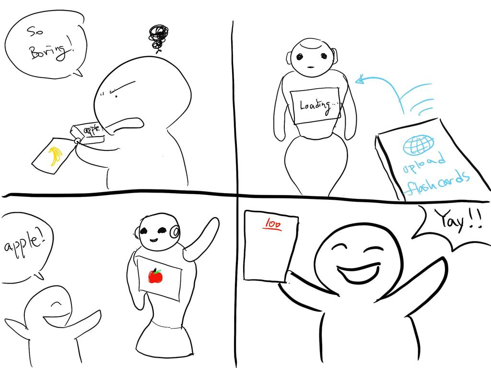
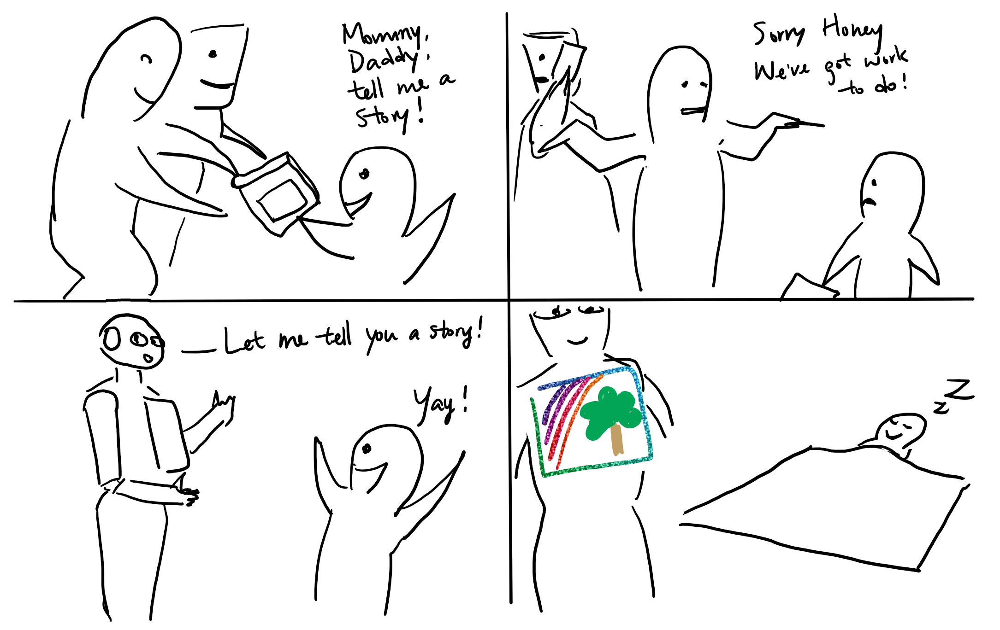
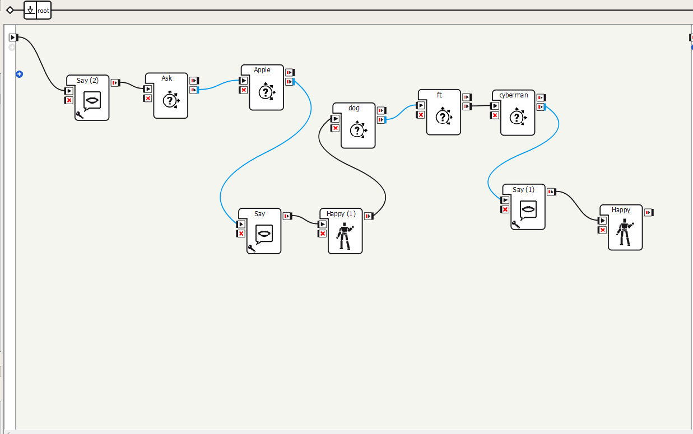
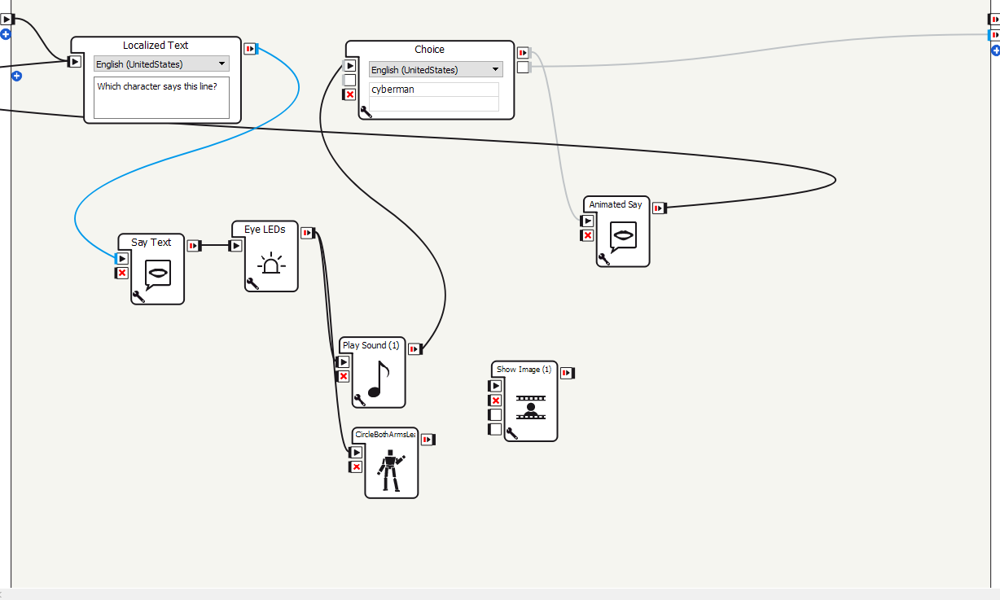
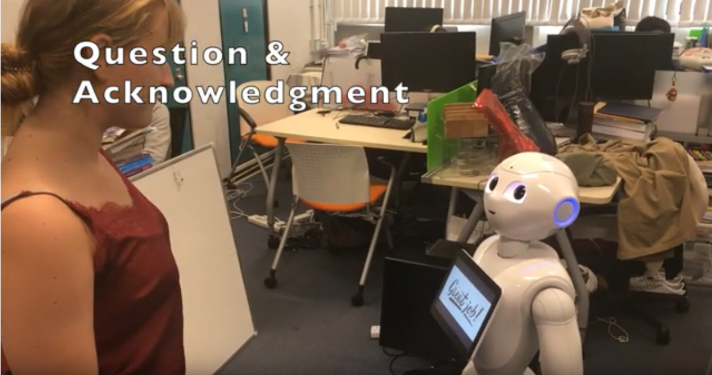
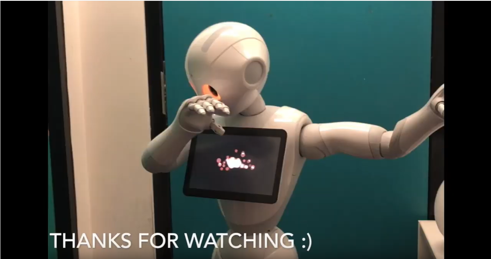

HCI Project 3
Report
Project: Pepper Companion Group: Cyberman
This is the last report for HCI, by Dohoon Kim (SID: 20215065), a final year ECE/COSC student enjoying finding creative ways to merge art and technology.
Brainstorming
 While no restrictions were put during the brainstorming phase on the past two projects, as we had limited access to pepper, and the interface to code on was still uncertain at this point, we proposed ideas with limitations in applications in mind. But this didn't mean we didn't have fun imagining using this robot, while we had formal ideas in education and companionship, we also discussed entertainment related functions, such as performing cheating rock paper scissors and teaching people how to do a handshake. In order to fully understand our capabilities, we were tasked to not only create a storyboard but try coding a quick prototype to see if the feature we voted were possible. I was tasked with the flash card idea.
Designs
Paired with Mashiat, we had a brief talk about how the overall workflow would look like performed by the robot. We agreed that the instact feedback of the robot is one of the strength of using the robot for a flash card system. We also discussed on the background this robot would be used: The robot would be placed either in a home schooled environment or in an understaffed classroom, where kids could interact with the robot to provide an engaging and enjoyful learning experience. With quick meddling with the choreographe, while we could not test out the majority of the functions without the physical robot, we found that the essentail components to build a flash card service were there in pre-made module, which gave a green light on pursuing this idea. I've asked a friend for a brief speed dating, but his concerns were mainly on the economical soundness on the robot, as these robots are quite expensive for a nomral consumer to purchase. We tried to reach for any kids for feedback, our acutual POV target, but failed to do so.
Pepper Companion
After listening every sub-groups findings on their storyboards, we decided that two of the ideas, flashcard game and storybook reading were very similar in actual implementation, while lacking enough features to decide on one as stand-alone. The other idea, social ettiqutte was considered too taxing for the scope of this project, as accurate hand-eye coordination was required for pepper to perform a handshake. In the end, we decided to merge the first two ideas in to a package, a companion robot for educating and entertaining kids. We divided the group into two, one for programming and the other focusing on presentaion. I was tasked to program the flashcard game feature of the robot.
Implementaion
high overview of the flashcard game code
example interior of a choice module
Luckily, choreographe had an intuitive interface to arrange pre-made modules to create desired behavior. However, due to most fuctions of the robot not available in the virtual emulation, it was hard to debug or test out a concept without actually trying it out in the lab. Furthermore, the actual robot seemed buggy, as parallel assignments were often ignored, and the say module failed to activate the text-to-speech function until a full restart. This very frustrating in debugging, as it took a good solid 10 minute from a restart. I've also found a significant delay in playing audio files, which was originally planned to be played for instant feedback. Thus many features were dropped on made in serial connections to put stability priority over performance. The story book reading sould joined and we discussed different ways to improve its features.Right before the demo we made some qualitative adjustment, the original stroy book version used a high squeaky voice when it was reading lines of the wolf, which we changed the voice pitch to a grumbly voice to better match the character. I enjoyed the difference, as it imitate how a parent would read it to their child.
Demo
 With the other sub-group finish the code in the story book reading feature, we invited a friend to demo our robot. To ensure any novice can interact with the robot easily, all input were done using voice recognition, and instanct feedback in both sound and voice were presented as a response. We could see that she was amused of robot acutually responding to her commands and dancing when she was answering the questions correct.  While not availabe in the actual demo due to pepper's inability to raise its arm higher than its shoulder using motor controls, we also made the robot to dab using animation mode, this was fun!Reflection
There were a few lessons I learnt through this project.
- Escaping from the uncanny valley is quite difficult. When trying to make pepper's actions more human like, it only made it look a little more awkward. I learnt that belivable human behavior requires alot of finesse, which could not be achieved with just pre-made module sequences.
- Debug as quickly as possible in the robot before theory crafting all the features. A lot of the original code base was dropped due to scrambling prarallel flows and some features with significant delay. The time wasted could have been used to develop working features in the robot.
- Again division of labor worked well for this group as well. As the project scope was not set to grand to ensure a timely completion, I think everyone could work efficiently without much time wasted in meetings.